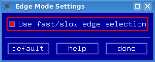

Edge Mode
The step mode option is available for all Smart Scale card pins.
- In the Pin Margin tool, select . The Edge Mode Settings window opens.

- Activate the Use fast/slow edge selection checkbox as you desire.
- If you select this checkbox, the fast edges and slow edges are displayed in the Timing Options panel.
- If you clear this checkbox, the drive edges are displayed instead of fast and slow edges. Selecting a drive edge is equivalent to selecting both fast and slow edges simultaneously.
- Click done.
Functional changes
- Introduced in SmarTest 7.0.1